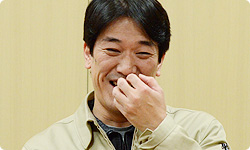
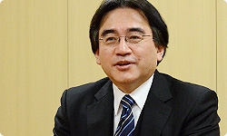
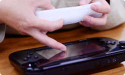

<div class="l-category-local-header">
<div class="category-local-header">
<div class="category-local-heading"><span>社長が訊く</span>
<div class="category-local-sub">IWATA ASKS


<div class="l-soft-topic-path is-block">
<div class="l-soft-topic-path-inner">
<div class="soft-topic-path">
<ul class="topic-path"><li class="topic-path-item"><span>『Wii U』 New スーパーマリオブラザーズ U篇</span></li></ul>


<div id="page-container">
<header class="interviewheader">
<h2 class="interviewheader__ttl"><span class="subtext">社長が訊く</span>『Wii U』</h2>

</header>
<div class="tabmenu-container">
<p class="tabmenu__ttl">シリーズ一覧
<ul class="tabmenu__body tabnum12">
<li class="tabmenu__item tab1">本体 篇</li>
<li class="tabmenu__item tab2">Wii U GamePad 篇</li>
<li class="tabmenu__item tab3">Miiverse プロデュース 篇</li>
<li class="tabmenu__item tab4">Miiverse 開発スタッフ 篇</li>
<li class="tabmenu__item tab5">インターネットブラウザー 篇</li>
<li class="tabmenu__item tab6">Wii U Chat 篇</li>
<li class="tabmenu__item tab7">New スーパーマリオブラザーズ U 篇</li>
<li class="tabmenu__item tab8">ZombiU（ゾンビU） 篇</li>
<li class="tabmenu__item tab9">Nintendo×JOYSOUND Wii カラオケ U 篇</li>
<li class="tabmenu__item tab10">Nintendo Land 篇</li>
<li class="tabmenu__item tab11">Nintendo TVii 篇</li>
<li class="tabmenu__item tab12">Wii Street U powered by Google 篇</li>
</ul>

<div class="hero-container">
<div class="hero__img">

<div class="interviewsubheader">
<div class="interviewsubheader__ttl"><h2>New スーパーマリオブラザーズ U篇</h2>

<div class="pageindex-container">
<p class="pageindex__ttl">目次
<ul class="pageindex__body">
<li class="pageindex__item">1. 「何を新しくするの？」</li>
<li class="pageindex__item">2. 「もったいない」</li>
<li class="pageindex__item active">3. “ノーバディプレイ”</li>
<li class="pageindex__item">4. マップをひとつに</li>
<li class="pageindex__item">5. 手元で投稿を読む</li>
<li class="pageindex__item">6. 「いろんなものをタッチしてほしい」</li>
</ul>

<div class="interview-container">
<h3 class="interview__ttl">3. “ノーバディプレイ”</h3>

岩田
: その「おだいモード」の難易度調整は<br>どのように進めたんですか？<br>チームにはゲームがうまい人ばっかりでしょう？


岩本
: ・・・（黙って首を横にふる）。


岩田
: あ、いま、岩本さんが<br>「違う」って顔をしましたけど（笑）。


一同
: （笑）


足助
: あの・・・言いにくいんですけど、<br>岩本さんは『マリオ』があまりうまくないんです。


竹本
: ただ、「うまくない」とは言っても、<br>クリアはできるんですよね？


岩本
: はい。クリアはできます。<br>自分では、それほどヘタだとは思っていないのですが・・・。


足助
: なので、岩本さんくらいのレベルの人や、<br>『マリオ』をクリアできない人も<br>チーム内に何人かいましたので、<br>そういう人たちにも協力してもらって、<br>レベルの低いところから調整をしていました。


岩田
: いわば岩本さんは<br>リトマス試験紙だったんですね（笑）。


岩本
: はい。低いほうの、ですけど（笑）。




足助
: で、うまい人は<br>マリオクラブ（※9）のトップレベルの人に<br>リトマス試験紙になってもらって、<br>その人たちからも「ちょっと歯ごたえがあるぞ」<br>と言ってもらえるくらいになりました。

※9マリオクラブ＝マリオクラブ株式会社。任天堂の開発中ソフトのデバッグやテストプレイを行う。


岩田
: でも「“ちょっと”苦労しました」なんですよね、<br>マリオクラブの人たちにとっては（笑）。


足助
: いえ、今回は「“けっこう”苦労しました」と。


岩田
: あ、そこまで言われましたか。


足助
: そうなんです。


岩田
: それって、ちょっと<br>達成感があったんじゃないですか？<br>ふだん、そういう難易度の高いゲームは<br>なかなかつくれないですし。


足助
: そうですね。<br>でも、誰もクリアできないとやっぱりダメなので、<br>あまり難しくしすぎないようにはしました。


竹本
: でも、ＮＯＡ（Nintendo of America）の<br>テスターさんから<br>「こんなのクリアできませんよ！」<br>というのがきてましたよね（笑）。


岩田
: へえ～、強者ぞろいの<br>アメリカのテスターさんたちが、<br>白旗を揚げたものもあったんですか？


足助
: そうです。<br>「これは本当にクリアできるんですか？」<br>というメールがきました。


岩田
: つまり「ゲームの設計ミスだ」<br>と思ったんですね。


竹本
: そうなんです。<br>そこで、クリアできることを証明するために、<br>ムービーをアメリカに送って・・・。


足助
: すると翌日には「すみません、できました」<br>という返事がきたんです（笑）。


岩田
: ああ、腕の問題じゃなかったんですね。


足助
: そうなんです。<br>金メダルを取るためには、<br>ちょっと工夫をしなければならないものもあるんです。


岩田
: それはつまり、<br>アクションゲームの『マリオ』が<br>「パズルゲームにもなっている」<br>ということなんですね。


足助
: そうです。<br>今回は「おだいモード」をクリアすると、<br>ムービーに録って保存することができるんですけど、<br>うまい人のムービーを見ると、<br>それまで「自分では行けない」と思っていた場所でも・・・。


岩田
: 「じつは行ける」ということがわかるんですね。


足助
: そう、わかるんです。<br>実際に同じことを試してみると、<br>自分にもできたりするんです。


岩田
: だから、うまい人のビデオを見るのは<br>上達の近道になるんですね。




足助
: はい。そこで、『NewマリオWii』のときは、<br>「おたからムービー」というかたちで、<br>開発スタッフがプレイした動画を<br>ゲームのなかに収録していたんですが、<br>今回は別のかたちで<br>ご覧いただけるようにしようと思っているんです。


岩田
: 「乞うご期待！」ということですね。


足助
: はい（笑）。<br>それで、「おだいモード」の話に戻すと、<br>今回は「バディプレイおだい」というのがあって、<br>ひとりではできない、バディプレイを使ったお題なんです。


岩田
: つまり、ふたりそろわないといけないんですね。<br>しかも、気の合ったふたりじゃないといけませんね。


足助
: そうなんです。<br>最初は失敗したりすると、<br>「お前のせいだー！」とか<br>いがみあうこともあるんですけど・・・。


岩本
: うまくできると、<br>一気に仲良くなるんです（笑）。


竹本
: やっぱり、うまい人同士で遊ぶと、<br>バディ役の人は「ここに出してほしいだろうな」<br>というところにブロックをちゃんと出せるし、<br>プレイヤーの人も「次はここに出すだろうな」<br>というのが読めてきますので・・・。


足助
: 呼吸が合ってくると、<br>すごく気持ちのいいプレイができるようになります。<br>しかも、プレイヤーとバディを交代して遊ぶと、<br>お互いの動きを見ているうちに、<br>どんどん上達していくんです。<br>そのように、上級者がふたりそろうと、<br>超絶プレイが楽しめるようになります。


竹本
: ただ、「バディプレイおだい」で課題になったのは、<br>ふたりがそろわないと遊べないということなんです。<br>やっぱり、ひとりだけでプレイする人がいて、<br>そのような人たちがコンプリートできないものは<br>「つくりたくない」と思っていましたので・・・。


足助
: そうしたら、たまたまあるプログラマーさんが、<br>「バディプレイおだい」をひとりでコツコツとやっていて。


岩田
: ひとりでやるってどういうことですか？


足助
: Wiiリモコンを両手に持って・・・


岩本
: こう持って・・・。


竹本
: 右手の中指で、こうタッチして・・・。


足助
: こんな感じです。




岩田
: ああ、Wiiリモコンを両手に持って、<br>右手の中指の指先で、<br>Wii U GamePadの画面をタッチするんですか（笑）。


岩本
: だから、“ノーバディプレイ”なんです。


一同
: （笑）


足助
: しかもそのプログラマーさんは、<br>「バディプレイおだい」の金メダルを、<br>全部ひとりで取ったんです。


岩田
: それはすごい！


足助
: ひとりでやっているから、<br>思ったところにブロックも出せるんです。


岩田
: じゃあ、そのプログラマーさんが<br>ひとりで遊べることを証明してくれたんですね。


竹本
: はい。なので、彼のおかげで、<br>不安が解消されました。


<li class="pagination-prev"><span>2. 「もったいない」</span></li>
<li class="pagination-next"><span>4. マップをひとつに</span></li>
</ul>
<div class="listbtn-container">
<p class="listbtn__item">社長が訊く 一覧

